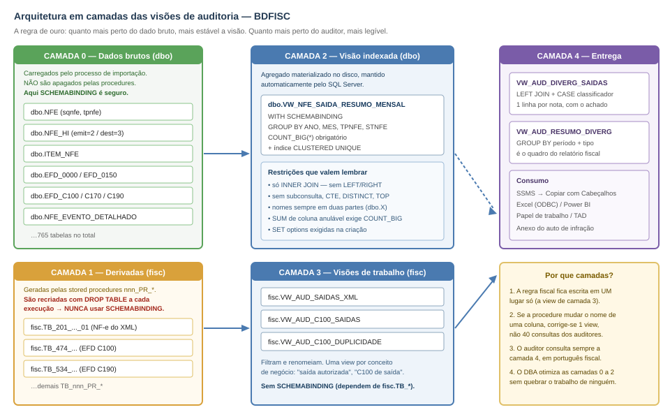
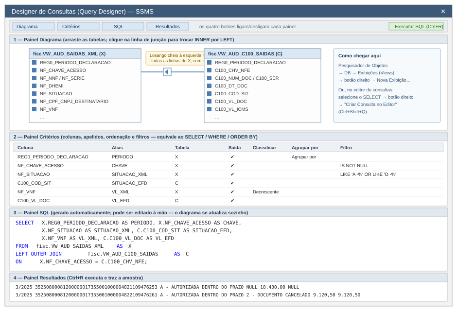
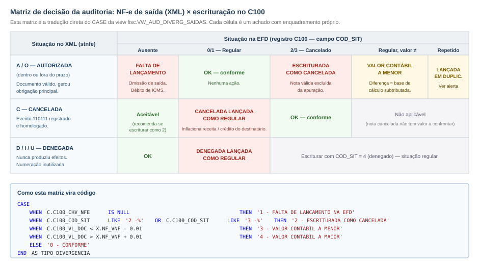
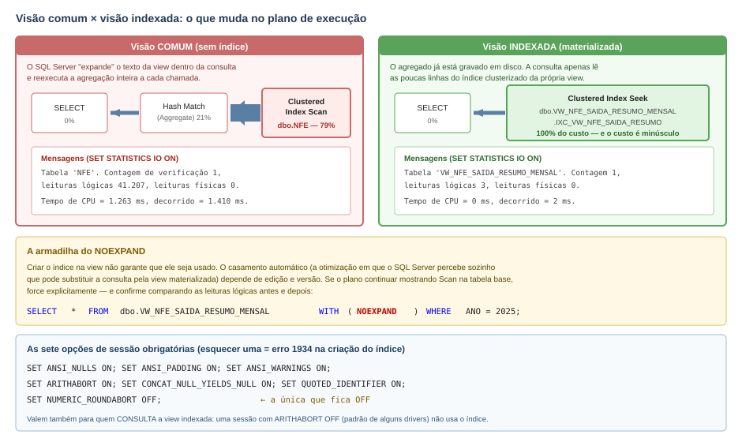

Ao final de duas horas o auditor terá construído, com as próprias mãos, um conjunto de visões (views) reutilizáveis que responde a uma pergunta concreta de fiscalização:
"Todas as notas fiscais de saída (emissão própria) que o contribuinte emitiu e teve autorizadas foram escrituradas na EFD, pelo valor correto, e sem terem sido indevidamente marcadas como canceladas?"
O produto final é uma consulta única, fisc.VW_AUD_DIVERG_SAIDAS, que devolve uma linha por nota fiscal com o achado já classificado, e um resumo por período pronto para virar quadro do relatório de auditoria.
O que se aprende no caminho:
| Competência | Onde é exercitada |
|---|---|
| Reconhecer a estrutura do BDFISC (dados brutos × tabelas derivadas) | Etapa 0 |
| Construir views noDesigner de Consultas do SSMS | Etapas 1 e 2 |
Traduzir uma regra fiscal emLEFT JOIN + CASE |
Etapa 3 |
| Consolidar achados em quadro gerencial | Etapa 4 |
Proteger views comWITH SCHEMABINDING |
Etapa 5 |
| Materializar agregados comview indexada | Etapa 6 |
| Criar índices de apoio emedir o ganho | Etapa 7 |
| Exportar o papel de trabalho | Etapa 8 |
| Horário | Etapa | Duração |
|---|---|---|
| 00:00 – 00:15 | Etapa 0 — Reconhecimento da base | 15 min |
| 00:15 – 00:35 | Etapa 1 — Primeira view no Designer de Consultas (saídas do XML) | 20 min |
| 00:35 – 00:50 | Etapa 2 — View da escrituração (C100) | 15 min |
| 00:50 – 01:15 | Etapa 3 — View de divergência (o coração da auditoria) | 25 min |
| 01:15 – 01:25 | Etapa 4 — View de resumo por período | 10 min |
| 01:25 – 01:35 | Etapa 5 — WITH SCHEMABINDING: o que protege e onde não usar |
10 min |
| 01:35 – 01:50 | Etapa 6 — View indexada de controle | 15 min |
| 01:50 – 02:00 | Etapa 7 e 8 — Índices de apoio, medição e exportação | 10 min |
nnn_PR_* executadas (as tabelas fisc.TB_* precisam existir e estar populadas);fisc (CREATE VIEW, ALTER SCHEMA::fisc). Se você só tiver leitura, peça ao DBA a criação de um schema próprio (ex.: aud) e substitua fisc. por aud. em todos os scripts.Convenção desta apostila: cada banco corresponde a um contribuinte auditado (o nome do banco carrega a inscrição estadual e as datas da carga). Por isso nenhuma view filtra por CNPJ — o recorte por contribuinte já está dado pela escolha do banco.
O BDFISC tem cerca de 765 tabelas e 199 stored procedures, distribuídas em dois schemas com papéis completamente diferentes. Entender essa divisão é o que separa um auditor que sabe usar a base de um que fica perdido nela.

Figura 1 — As camadas do BDFISC e onde cada tipo de view se encaixa.
Schemadbo — dados brutos |
Schemafisc — tabelas derivadas |
|
|---|---|---|
| Origem | Importação dos XML de NF-e/CT-e e dos arquivos da EFD | Geradas pelas proceduresdbo.nnn_PR_* |
| Nomes | NFE, ITEM_NFE, EFD_C100, EFD_C170, EFD_E110… |
TB_201_PR_..., TB_474_PR_..., TB_137_PR_... |
| Formato | Normalizado, colunas técnicas (sqnfe, stnfe, tpoperacao) |
Achatado, colunas em "português fiscal" (NF_CHAVE_ACESSO, C100_COD_SIT) |
| Estabilidade | Permanentes | Apagadas e recriadas (DROP TABLE) a cada execução da procedure |
| Uso na oficina | Base da view indexada (Etapa 6) | Base das views de trabalho (Etapas 1 a 4) |
Essa última linha é a mais importante e vai reaparecer na Etapa 5.
Passo 0.1 — Localizar as tabelas do tema. Abra uma nova consulta (Ctrl+N) e execute:
-- Quais tabelas derivadas existem, e quantas linhas cada uma tem?
SELECT
s.name AS esquema,
t.name AS tabela,
p.rows AS linhas,
CAST(SUM(a.total_pages) * 8 / 1024.0 AS DECIMAL(12,2)) AS tamanho_mb
FROM sys.tables AS t
JOIN sys.schemas AS s ON s.schema_id = t.schema_id
JOIN sys.indexes AS ix ON ix.object_id = t.object_id
JOIN sys.partitions AS p ON p.object_id = t.object_id AND p.index_id = ix.index_id
JOIN sys.allocation_units AS a ON a.container_id = p.partition_id
WHERE ix.index_id <= 1
AND (t.name LIKE 'TB_201%' OR t.name LIKE 'TB_474%' OR t.name IN ('NFE','EFD_C100','NFE_HI','EFD_0000'))
GROUP BY s.name, t.name, p.rows
ORDER BY linhas DESC;
Passo 0.2 — Confirmar o período e o contribuinte auditados.
-- Quem é o contribuinte e quais períodos foram entregues?
SELECT
z.nrinscrestadual AS inscricao_estadual,
z.nrcnpj AS cnpj,
z.nocontribuinte AS razao_social,
z.dtinicial,
z.dtfinal,
CONCAT(MONTH(z.dtinicial), '/', YEAR(z.dtinicial)) AS periodo_declaracao
FROM dbo.EFD_0000 AS z
ORDER BY z.dtinicial;
Anote o formato do período. A coluna
REG0_PERIODO_DECLARACAO, que aparece em quase todas as tabelasfisc.TB_*, é montada exatamente assim:CONCAT(MONTH(dtinicial),'/',YEAR(dtinicial)). Isso produz3/2025, e não03/2025— ou seja, é um texto sem zero à esquerda. Ordenar por essa coluna coloca outubro (10/2025) antes de março (3/2025). Guarde essa armadilha: ela será resolvida na Etapa 4.
Passo 0.3 — Espiar as duas tabelas que serão usadas.
-- Notas fiscais próprias extraídas do XML (a tabela _01 é a de emissão própria;
-- a _02 traz as de terceiros)
SELECT TOP (20)
REG0_PERIODO_DECLARACAO, NF_CHAVE_ACESSO, NF_MOD, NF_SERIE, NF_NNF,
NF_DHEMI, NF_SITUACAO, NF_TPNF, TIPO_EMISSAO,
NF_CPF_CNPJ_DESTINATARIO, NF_UF_DESTINATARIO, NF_VNF, ALERTA_EFD
FROM fisc.TB_201_PR_XML_NOTAS_FISCAIS_PROPRIAS_E_TERCEIROS_01;
-- Registro C100 da EFD (identificação do documento fiscal escriturado)
SELECT TOP (20)
REG0_PERIODO_DECLARACAO, C100_IND_OPER, C100_IND_EMIT, C100_COD_MOD,
C100_COD_SIT, C100_SER, C100_NUM_DOC, C100_CHV_NFE,
C100_DT_DOC, C100_VL_DOC, C100_VL_BC_ICMS, C100_VL_ICMS
FROM fisc.TB_474_PR_EFD_REGISTRO_C100_IDENTIFICACAO_DOC_FISCAL;
Passo 0.4 — Aprender os domínios. Os valores abaixo estão codificados nas procedures do BDFISC e serão usados como filtro em todas as views. Vale copiá-los para o caderno:
| Coluna | Valores possíveis |
|---|---|
NF_SITUACAO (de dbo.NFE.stnfe) |
A - AUTORIZADA DENTRO DO PRAZO · O - AUTORIZADA FORA DO PRAZO · C - CANCELADA · D - DENEGADA POR IRREGULARIDADE DO EMITENTE · I - DENEGADA POR IRREGULARIDADE DO DESTINATARIO · U - DENEGACAO POR DESTINATARIO NAO HABILITADO A OPERAR NA UF |
NF_TPNF (de tpoperacao) |
0 - ENTRADA · 1 - SAIDA |
NF_MOD (de tpnfe) |
55 - NFE (tpnfe = 1) · 65 - NFCE (tpnfe = 2) · 55 - NFAE (tpnfe = 3) |
TIPO_EMISSAO |
PROPRIA (tabela _01) · TERCEIROS (tabela _02) |
C100_IND_EMIT |
0 - EMISSAO PROPRIA · 1 - TERCEIROS |
C100_IND_OPER |
0 - ENTRADA · 1 - SAIDA |
C100_COD_SIT |
0 - DOCUMENTO REGULAR · 1 - ESCRITURACAO EXTEMPORANEA DE DOCUMENTO REGULAR · 2 - DOCUMENTO CANCELADO · 3 - ESCRITURACAO EXTEMPORANEA DE DOCUMENTO CANCELADO · 4 - NF-E, NFC-E OU CT-E - DENEGADO · 5 - NUMERACAO INUTILIZADA · 6 - DOCUMENTO FISCAL COMPLEMENTAR · 7 - ESCRITURACAO EXTEMPORANEA DE DOCUMENTO COMPLEMENTAR · 8 - REGIME ESPECIAL OU NORMA ESPECIFICA |
ALERTA_EFD |
- · NOTA FISCAL LANCADA MAIS DE UMA VEZ NA EFD |
Passo 0.5 — Fechar o total de controle. Antes de cruzar qualquer coisa, saiba o tamanho do universo:
SELECT
(SELECT COUNT(*) FROM fisc.TB_201_PR_XML_NOTAS_FISCAIS_PROPRIAS_E_TERCEIROS_01
WHERE NF_TPNF = '1 - SAIDA') AS saidas_no_xml,
(SELECT COUNT(*) FROM fisc.TB_474_PR_EFD_REGISTRO_C100_IDENTIFICACAO_DOC_FISCAL
WHERE C100_IND_OPER = '1 - SAIDA' AND C100_IND_EMIT = '0 - EMISSAO PROPRIA'
AND REG0_PERIODO_DECLARACAO not like '%2025%')
AS saidas_escrituradas_c100;
Se os dois números já forem muito diferentes, a auditoria começa com uma hipótese forte antes mesmo da primeira view.
Objetivo: criar fisc.VW_AUD_SAIDAS_XML — o universo de notas de saída próprias efetivamente autorizadas.

Figura 2 — Os quatro painéis do Designer de Consultas do SSMS e como cada um corresponde a uma parte do comando SQL.
Como abrir (dois caminhos):
SELECT, clique com o botão direito e escolha Criar Consulta no Editor (Ctrl+Shift+Q). Útil para "abrir no diagrama" uma consulta que você já tem.Os quatro painéis são ligados/desligados pelos botões da barra e se sincronizam entre si:
| Painel | Equivale a | Para que serve |
|---|---|---|
| Diagrama | FROM e JOIN |
Arrastar tabelas, desenhar junções, marcar colunas |
| Critérios | SELECT, WHERE, GROUP BY, ORDER BY |
Grade de colunas, apelidos, filtros e ordenação |
| SQL | O comando inteiro | Ver e editar o texto gerado |
| Resultados | — | Amostra dos dados (Ctrl+R) |
Limite conhecido do Designer: ele não entende CTEs (
WITH),UNIONcomplexos,PIVOT, funções de janela nemOUTER APPLY. Ao encontrá-los, exibe "A consulta não pode ser representada graficamente". Isso não é erro — é apenas o diagrama desistindo. O painel SQL continua funcionando. A estratégia desta oficina é usar o Designer para montar o esqueleto e finalizar as partes sofisticadas no editor.
Passo 1.1 — Pesquisador de Objetos → Exibições → botão direito → Nova Exibição…
Passo 1.2 — Na janela "Adicionar Tabela", vá à aba Tabelas, localize TB_201_PR_XML_NOTAS_FISCAIS_PROPRIAS_E_TERCEIROS_01, clique em Adicionar e depois em Fechar.
Passo 1.3 — No painel Diagrama, marque a caixinha das colunas abaixo (elas vão aparecendo na grade de Critérios na ordem em que você clica — clique nesta ordem):
REG0_PERIODO_DECLARACAO NF_ANO NF_MES
NF_CHAVE_ACESSO NF_MOD NF_SERIE NF_NNF
NF_DHEMI NF_SITUACAO NF_TPNF TIPO_EMISSAO
NF_CPF_CNPJ_DESTINATARIO NF_XNOME_DESTINATARIO NF_UF_DESTINATARIO
NF_NATOP NF_VNF NF_VBC NF_VICMS
ALERTA_EFD
Passo 1.4 — No painel Critérios, preencha a coluna Filtro:
| Coluna | Filtro |
|---|---|
NF_TPNF |
= '1 - SAIDA' |
TIPO_EMISSAO |
= 'PROPRIA' |
NF_SITUACAO |
IN ('A - AUTORIZADA DENTRO DO PRAZO', 'O - AUTORIZADA FORA DO PRAZO') |
NF_CHAVE_ACESSO |
IS NOT NULL |
Passo 1.5 — Ainda em Critérios, preencha a coluna Alias para dar nomes curtos e estáveis: PERIODO, ANO, MES, CHAVE_ACESSO, MODELO, SERIE, NUMERO, DT_EMISSAO, SITUACAO_XML, TIPO_OPERACAO, EMISSAO, CNPJ_CPF_DEST, NOME_DEST, UF_DEST, NATUREZA_OPERACAO, VL_NOTA, VL_BC_ICMS, VL_ICMS, ALERTA_EFD.
Passo 1.6 — Pressione Ctrl+R para ver a amostra no painel Resultados. Confira se aparecem apenas saídas autorizadas.
Passo 1.7 — Confira o painel SQL. Deve estar equivalente ao script abaixo. Salve a view com Ctrl+S, dando o nome VW_AUD_SAIDAS_XML (o SSMS a criará no schema padrão — se for dbo, ajuste depois com ALTER SCHEMA fisc TRANSFER dbo.VW_AUD_SAIDAS_XML;).
Script equivalente (use este se preferir não passar pelo Designer, ou para versionar a view):
USE [<coloque_aqui_o_nome_do_banco_da_auditoria>];
GO
CREATE OR ALTER VIEW fisc.VW_AUD_SAIDAS_XML
AS
/* Universo de notas fiscais de SAÍDA, de emissão PRÓPRIA, efetivamente
AUTORIZADAS pela SEFAZ (dentro ou fora do prazo).
Fonte: fisc.TB_201_..._01 (tabela derivada da procedure 201_PR_XML_...).
Autor: <turma> Data: <data> */
SELECT
T.REG0_PERIODO_DECLARACAO AS PERIODO,
T.NF_ANO AS ANO,
T.NF_MES AS MES,
T.NF_CHAVE_ACESSO AS CHAVE_ACESSO,
T.NF_MOD AS MODELO,
T.NF_SERIE AS SERIE,
T.NF_NNF AS NUMERO,
T.NF_DHEMI AS DT_EMISSAO,
T.NF_SITUACAO AS SITUACAO_XML,
T.NF_TPNF AS TIPO_OPERACAO,
T.TIPO_EMISSAO AS EMISSAO,
T.NF_CPF_CNPJ_DESTINATARIO AS CNPJ_CPF_DEST,
T.NF_XNOME_DESTINATARIO AS NOME_DEST,
T.NF_UF_DESTINATARIO AS UF_DEST,
T.NF_NATOP AS NATUREZA_OPERACAO,
T.NF_VNF AS VL_NOTA,
T.NF_VBC AS VL_BC_ICMS,
T.NF_VICMS AS VL_ICMS,
T.ALERTA_EFD AS ALERTA_EFD
FROM fisc.TB_201_PR_XML_NOTAS_FISCAIS_PROPRIAS_E_TERCEIROS_01 AS T
WHERE T.NF_TPNF = '1 - SAIDA'
AND T.TIPO_EMISSAO = 'PROPRIA'
AND T.NF_SITUACAO IN ('A - AUTORIZADA DENTRO DO PRAZO',
'O - AUTORIZADA FORA DO PRAZO')
AND T.NF_CHAVE_ACESSO IS NOT NULL;
GO
Passo 1.8 — Validar:
SELECT COUNT(*) AS qt_saidas_autorizadas, SUM(VL_NOTA) AS vl_total
FROM fisc.VW_AUD_SAIDAS_XML;
SELECT PERIODO, COUNT(*) AS qt, SUM(VL_NOTA) AS vl
FROM fisc.VW_AUD_SAIDAS_XML
GROUP BY PERIODO
ORDER BY MIN(ANO), MIN(MES);
Por que criar uma view em vez de repetir o
SELECT? Porque a definição de "saída autorizada própria" passa a existir em um único lugar. Se amanhã a equipe decidir queO - AUTORIZADA FORA DO PRAZOdeve ser tratada à parte, muda-se uma view — não as vinte consultas que cada auditor guardou na própria pasta.
Objetivo: criar fisc.VW_AUD_C100_SAIDAS — o que o contribuinte declarou ter emitido.
Repita o procedimento da Etapa 1 no Designer, agora sobre TB_474_PR_EFD_REGISTRO_C100_IDENTIFICACAO_DOC_FISCAL, ou aplique o script:
CREATE OR ALTER VIEW fisc.VW_AUD_C100_SAIDAS
AS
/* Documentos fiscais de SAÍDA, de emissão PRÓPRIA, escriturados no
registro C100 da EFD ICMS/IPI. Modelos 55 (NF-e) e 65 (NFC-e). */
SELECT
C.REG0_PERIODO_DECLARACAO AS PERIODO,
C.REG0_IE AS IE_CONTRIBUINTE,
C.C100_CHV_NFE AS CHAVE_ACESSO,
C.C100_COD_MOD AS MODELO,
C.C100_SER AS SERIE,
C.C100_NUM_DOC AS NUMERO,
C.C100_DT_DOC AS DT_DOCUMENTO,
C.C100_DT_E_S AS DT_ENTRADA_SAIDA,
C.C100_COD_SIT AS SITUACAO_EFD,
C.C100_IND_OPER AS TIPO_OPERACAO,
C.C100_IND_EMIT AS EMISSAO,
C.REG0150_CNPJ_PART AS CNPJ_PARTICIPANTE,
C.REG0150_NOME_PART AS NOME_PARTICIPANTE,
C.C100_VL_DOC AS VL_DOCUMENTO,
C.C100_VL_MERC AS VL_MERCADORIA,
C.C100_VL_BC_ICMS AS VL_BC_ICMS,
C.C100_VL_ICMS AS VL_ICMS,
C.C100_VL_BC_ICMS_ST AS VL_BC_ICMS_ST,
C.C100_VL_ICMS_ST AS VL_ICMS_ST
FROM fisc.TB_474_PR_EFD_REGISTRO_C100_IDENTIFICACAO_DOC_FISCAL AS C
WHERE C.C100_IND_OPER = '1 - SAIDA'
AND C.C100_IND_EMIT = '0 - EMISSAO PROPRIA'
AND C.C100_COD_MOD IN ('55', '65')
AND C.REG0_PERIODO_DECLARACAO not like '%2025%'
AND C.C100_COD_SIT = '0 - DOCUMENTO REGULAR';
GO
A mesma nota lançada duas vezes infla o valor contábil declarado. Esta view isola o problema — e é o primeiro GROUP BY … HAVING da oficina:
CREATE OR ALTER VIEW fisc.VW_AUD_C100_DUPLICIDADE_Tab
AS
select
C100_CHV_NFE,
COUNT(*) AS QT_LANCAMENTOS,
SUM(C100_VL_DOC) AS VL_SOMADO,
MIN(REG0_PERIODO_DECLARACAO) AS PRIMEIRO_PERIODO,
MAX(REG0_PERIODO_DECLARACAO) AS ULTIMO_PERIODO
from fisc.TB_474_PR_EFD_REGISTRO_C100_IDENTIFICACAO_DOC_FISCAL
where REG0_PERIODO_DECLARACAO not like '%2025%' and C100_CHV_NFE is not null
and C100_CHV_NFE not like '%-%' and C100_COD_SIT = '0 - DOCUMENTO REGULAR'
group by C100_CHV_NFE
having COUNT(*) >1;
Validação da etapa:
SELECT COUNT(*) AS qt_c100_saidas, SUM(VL_DOCUMENTO) AS vl_total
FROM fisc.VW_AUD_C100_SAIDAS;
SELECT COUNT(*) AS chaves_duplicadas
FROM fisc.VW_AUD_C100_DUPLICIDADE;
Cuidado ao montar
GROUP BYno Designer: ao clicar no botão Agrupar por (ícone Σ da barra), o painel Critérios ganha a coluna "Agrupar por". Colunas marcadas comoAgrupar porentram noGROUP BY; as marcadas com uma função (Contagem,Soma) entram como agregação. Filtros lançados na linha de uma coluna agregada viramHAVING, nãoWHERE— exatamente a distinção que a maioria das pessoas erra escrevendo à mão.
Esta é a etapa central. Aqui a regra fiscal vira código.

Figura 3 — Cruzamento entre a situação da nota no XML e a situação declarada no C100. Cada célula vermelha é um achado de auditoria.
Passo 3.1 — Nova Exibição → adicione as duas views já criadas: VW_AUD_SAIDAS_XML e VW_AUD_C100_SAIDAS (elas aparecem na aba Exibições da janela "Adicionar Tabela").
Passo 3.2 — No painel Diagrama, arraste a coluna CHAVE_ACESSO da primeira view sobre a coluna CHAVE_ACESSO da segunda. Surge a linha de junção.
Passo 3.3 — Este é o clique decisivo da oficina. Clique com o botão direito sobre a linha de junção → Selecionar Todas as Linhas de VW_AUD_SAIDAS_XML. O losango da junção muda de forma e o SQL passa de INNER JOIN para LEFT OUTER JOIN.
| Tipo de junção | Diagrama | O que responde |
|---|---|---|
INNER JOIN |
losango vazio dos dois lados | "notas que estão nos dois lugares" — esconde justamente a falta de lançamento |
LEFT JOIN (todas de X) |
losango cheio à esquerda | "todas as notas autorizadas, escrituradas ou não" ← é o que queremos |
RIGHT JOIN (todas de C) |
losango cheio à direita | "tudo que foi escriturado, inclusive sem nota autorizada correspondente" |
Regra prática de auditoria: a divergência mora sempre no
NULLdoLEFT JOIN. Se você usarINNER JOIN, a consulta fica mais rápida e perde exatamente as notas omitidas — o achado de maior valor.
Passo 3.4 — Marque as colunas de interesse dos dois lados e execute (Ctrl+R) para conferir que aparecem linhas com SITUACAO_EFD nulo.
Passo 3.5 — O CASE classificador o Designer não monta. Copie o texto do painel SQL, feche o Designer e finalize no editor de consultas com o script abaixo.
CREATE OR ALTER VIEW fisc.VW_AUD_DIVERG_SAIDAS
AS
/* ============================================================================
AUDITORIA DE SAÍDAS — confronto NF-e autorizada (XML) × escrituração C100.
Uma linha por nota fiscal de saída autorizada, com a divergência já
classificada e o valor do reflexo apurado.
Fontes: fisc.VW_AUD_SAIDAS_XML, fisc.VW_AUD_C100_SAIDAS
============================================================================ */
SELECT
X.PERIODO,
X.ANO,
X.MES,
X.CHAVE_ACESSO,
X.MODELO,
X.SERIE,
X.NUMERO,
X.DT_EMISSAO,
X.CNPJ_CPF_DEST,
X.NOME_DEST,
X.UF_DEST,
X.NATUREZA_OPERACAO,
-- lado XML (o que a SEFAZ autorizou)
X.SITUACAO_XML,
X.VL_NOTA AS VL_XML,
X.VL_ICMS AS VL_ICMS_XML,
-- lado EFD (o que o contribuinte declarou)
C.SITUACAO_EFD,
C.PERIODO AS PERIODO_ESCRITURACAO,
C.VL_DOCUMENTO AS VL_EFD,
C.VL_ICMS AS VL_ICMS_EFD,
-- classificação do achado
CASE
WHEN C.CHAVE_ACESSO IS NULL
THEN '1 - FALTA DE LANCAMENTO NA EFD'
WHEN C.SITUACAO_EFD LIKE '2 -%' OR C.SITUACAO_EFD LIKE '3 -%'
THEN '2 - ESCRITURADA COMO CANCELADA'
WHEN C.SITUACAO_EFD LIKE '5 -%'
THEN '5 - ESCRITURADA COMO NUMERACAO INUTILIZADA'
WHEN C.VL_DOCUMENTO < X.VL_NOTA - 0.01
THEN '3 - VALOR CONTABIL A MENOR'
WHEN C.VL_DOCUMENTO > X.VL_NOTA + 0.01
THEN '4 - VALOR CONTABIL A MAIOR'
WHEN X.ALERTA_EFD = 'NOTA FISCAL LANCADA MAIS DE UMA VEZ NA EFD'
THEN '6 - LANCADA EM DUPLICIDADE'
ELSE '0 - CONFORME'
END AS TIPO_DIVERGENCIA,
-- reflexo financeiro: quanto de valor contábil deixou de ser declarado
CASE
WHEN C.CHAVE_ACESSO IS NULL THEN X.VL_NOTA
WHEN C.SITUACAO_EFD LIKE '2 -%' OR C.SITUACAO_EFD LIKE '3 -%' THEN X.VL_NOTA
WHEN C.SITUACAO_EFD LIKE '5 -%' THEN X.VL_NOTA
WHEN C.VL_DOCUMENTO < X.VL_NOTA - 0.01 THEN X.VL_NOTA - C.VL_DOCUMENTO
ELSE 0.00
END AS VL_DIFERENCA_APURADA,
-- reflexo em ICMS destacado
CASE
WHEN C.CHAVE_ACESSO IS NULL THEN X.VL_ICMS
WHEN C.SITUACAO_EFD LIKE '2 -%' OR C.SITUACAO_EFD LIKE '3 -%' THEN X.VL_ICMS
WHEN X.VL_ICMS > ISNULL(C.VL_ICMS, 0) + 0.01
THEN X.VL_ICMS - ISNULL(C.VL_ICMS, 0)
ELSE 0.00
END AS VL_ICMS_DIFERENCA,
X.ALERTA_EFD
FROM fisc.VW_AUD_SAIDAS_XML AS X
LEFT OUTER JOIN fisc.VW_AUD_C100_SAIDAS AS C
ON C.CHAVE_ACESSO = X.CHAVE_ACESSO;
GO
⚠ Efeito da duplicidade sobre a contagem. Se a mesma chave foi escriturada duas vezes no C100, o
LEFT JOINdevolve duas linhas para a mesma nota — e umCOUNT(*)sobre a view passa a contar notas a mais. Isso é tecnicamente correto (há de fato dois lançamentos), mas precisa ser dito no relatório. Para conferir o impacto:Se a diferença for relevante, trate os dois fenômenos separadamente: a view de divergência para os achados de valor, e
fisc.VW_AUD_C100_DUPLICIDADEpara o achado de duplicidade.
-- Panorama dos achados
SELECT
TIPO_DIVERGENCIA,
COUNT(*) AS QT_NOTAS,
SUM(VL_DIFERENCA_APURADA) AS VL_REFLEXO,
SUM(VL_ICMS_DIFERENCA) AS VL_ICMS_REFLEXO
FROM fisc.VW_AUD_DIVERG_SAIDAS
GROUP BY TIPO_DIVERGENCIA
ORDER BY TIPO_DIVERGENCIA;
-- As 50 notas de maior reflexo — é por onde a fiscalização começa
SELECT TOP (50)
TIPO_DIVERGENCIA, PERIODO, NUMERO, SERIE, DT_EMISSAO,
NOME_DEST, UF_DEST, VL_XML, VL_EFD, VL_DIFERENCA_APURADA
FROM fisc.VW_AUD_DIVERG_SAIDAS
WHERE TIPO_DIVERGENCIA <> '0 - CONFORME'
ORDER BY VL_DIFERENCA_APURADA DESC;
-- Concentração por destinatário: uma omissão sistemática costuma ter dono
SELECT
CNPJ_CPF_DEST, NOME_DEST, UF_DEST,
COUNT(*) AS QT_NOTAS_COM_ACHADO,
SUM(VL_DIFERENCA_APURADA) AS VL_REFLEXO
FROM fisc.VW_AUD_DIVERG_SAIDAS
WHERE TIPO_DIVERGENCIA <> '0 - CONFORME'
GROUP BY CNPJ_CPF_DEST, NOME_DEST, UF_DEST
HAVING SUM(VL_DIFERENCA_APURADA) > 0
ORDER BY VL_REFLEXO DESC;
1. NULL em comparação nunca é verdadeiro. Escrever WHERE C.SITUACAO_EFD <> '2 - DOCUMENTO CANCELADO' elimina silenciosamente as notas não escrituradas, porque NULL <> '...' não é verdadeiro — é desconhecido. Foi para evitar isso que a classificação está toda dentro de um CASE ordenado, com IS NULL em primeiro lugar.
2. Centavos. Comparar decimal com = funciona, mas divergências de um centavo por arredondamento poluem o relatório. Daí a tolerância ± 0.01. Ajuste conforme a orientação da sua coordenação.
3. Nunca envolva a coluna de junção em função. ON LTRIM(RTRIM(C.CHAVE_ACESSO)) = X.CHAVE_ACESSO funciona, mas impede o uso de índice e transforma a consulta em varredura completa. Se houver espaços ou zeros à esquerda no dado, a solução correta é normalizar na origem (na view de camada 3, ou com uma coluna computada persistida) — não dentro do ON.
O quadro que vai para o relatório precisa estar em ordem cronológica correta — e aqui a armadilha do 3/2025 cobra o preço.
CREATE OR ALTER VIEW fisc.VW_AUD_RESUMO_DIVERG_SAIDAS
AS
/* Quadro-resumo por período e tipo de divergência.
Note a coluna ORDEM_PERIODO: a coluna PERIODO é texto sem zero à esquerda
('3/2025'), o que produz ordenação alfabética errada. ANO*100+MES resolve. */
SELECT
D.ANO,
D.MES,
(D.ANO * 100) + D.MES AS ORDEM_PERIODO,
D.PERIODO,
D.TIPO_DIVERGENCIA,
COUNT(*) AS QT_NOTAS,
SUM(D.VL_XML) AS VL_TOTAL_XML,
SUM(ISNULL(D.VL_EFD, 0)) AS VL_TOTAL_EFD,
SUM(D.VL_DIFERENCA_APURADA) AS VL_REFLEXO,
SUM(D.VL_ICMS_DIFERENCA) AS VL_ICMS_REFLEXO,
CAST(100.0 * COUNT(*)
/ NULLIF(SUM(COUNT(*)) OVER (PARTITION BY D.ANO, D.MES), 0)
AS DECIMAL(6,2)) AS PCT_DO_PERIODO
FROM fisc.VW_AUD_DIVERG_SAIDAS AS D
GROUP BY D.ANO, D.MES, D.PERIODO, D.TIPO_DIVERGENCIA;
GO
-- O quadro pronto para o relatório
SELECT PERIODO, TIPO_DIVERGENCIA, QT_NOTAS, VL_REFLEXO, VL_ICMS_REFLEXO, PCT_DO_PERIODO
FROM fisc.VW_AUD_RESUMO_DIVERG_SAIDAS
ORDER BY ORDEM_PERIODO, TIPO_DIVERGENCIA;
Observação sobre o Designer: a função de janela
SUM(...) OVER (PARTITION BY ...)não é representável no diagrama. Ao abrir esta view no Designer você verá a mensagem de "não pode ser representada graficamente" — e tudo bem. Views a partir deste nível de complexidade vivem no editor de texto.
WITH SCHEMABINDING: o que protege e onde não usar (10 min)Uma view comum guarda apenas o texto da consulta. Se alguém apagar ou renomear uma coluna que ela usa, a view continua existindo e só quebra quando alguém tentar executá-la — provavelmente no meio de uma auditoria.
WITH SCHEMABINDING amarra a view às tabelas de origem: o SQL Server passa a impedir qualquer alteração que quebre a view.
Demonstração (2 minutos, alto impacto didático):
-- 1) Uma view amarrada sobre uma tabela de dados brutos
CREATE OR ALTER VIEW dbo.VW_NFE_SAIDA_BASE
WITH SCHEMABINDING
AS
SELECT
N.sqnfe,
N.tpnfe,
N.nrchaveacesso,
N.dhemissao,
N.vltotalnota
FROM dbo.NFE AS N -- nome em DUAS PARTES: obrigatório
WHERE N.tpoperacao = 1;
GO
-- 2) Tente derrubar a coluna. O SQL Server recusa.
-- ⚠ Execute apenas para ver a mensagem de erro; não confirme nada.
ALTER TABLE dbo.NFE DROP COLUMN vltotalnota;
/* Msg 5074 — O objeto 'VW_NFE_SAIDA_BASE' depende da coluna 'vltotalnota'.
Msg 4922 — ALTER TABLE DROP COLUMN vltotalnota falhou porque um ou mais
objetos acessam essa coluna. */
SCHEMABINDINGdbo.NFE, nunca NFE nem banco.dbo.NFE;SELECT * — todas as colunas explícitas;SCHEMABINDING.Esta é a regra específica desta base — e ela não está em nenhum manual de SQL Server.
As tabelas fisc.TB_* são recriadas do zero pelas procedures nnn_PR_*, que começam com um DROP TABLE IF EXISTS fisc.TB_.... Se você criar uma view WITH SCHEMABINDING sobre uma delas, o DROP TABLE passará a falhar, e a procedure de geração de tabelas derivadas quebrará para toda a equipe:
Msg 3729 — Não é possível DROP TABLE 'fisc.TB_474_...' porque está sendo
referenciada pelo objeto 'VW_AUD_C100_SAIDAS'.
| Camada | Objeto | SCHEMABINDING? |
|---|---|---|
| Dados brutos | views sobredbo.NFE, dbo.EFD_C100, dbo.NFE_HI |
Sim — as tabelas são permanentes |
| Derivadas | views sobrefisc.TB_* |
Não — as tabelas são apagadas e recriadas |
Se, mesmo assim, for preciso remover uma tabela amarrada, o caminho é desamarrar antes:
ALTER VIEW fisc.VW_EXEMPLO AS SELECT ... ; -- recria sem SCHEMABINDING
-- ou
DROP VIEW fisc.VW_EXEMPLO;
Objetivo: materializar em disco o total de notas de saída por mês e situação — o "controle de fechamento" que o auditor consulta dezenas de vezes por dia.

Figura 4 — Diferença no plano de execução e o papel das opções de sessão e da dica NOEXPAND.
Uma view comum é apenas um apelido: a cada consulta o SQL Server reexecuta a agregação inteira. Ao criar um índice clusterizado único sobre uma view SCHEMABINDING, o resultado passa a ser gravado fisicamente em disco e mantido automaticamente pelo motor a cada INSERT/UPDATE/DELETE nas tabelas de origem.
Como no BDFISC as tabelas dbo.* são carregadas uma vez e depois apenas consultadas, o custo de manutenção é praticamente zero e o benefício de leitura é enorme — é o cenário ideal para essa técnica.
SET ANSI_NULLS ON;
SET ANSI_PADDING ON;
SET ANSI_WARNINGS ON;
SET ARITHABORT ON;
SET CONCAT_NULL_YIELDS_NULL ON;
SET QUOTED_IDENTIFIER ON;
SET NUMERIC_ROUNDABORT OFF; -- a única que fica OFF
GO
Esquecer qualquer uma delas produz o erro 1934 na hora de criar o índice. E elas valem também para quem consulta a view depois: uma sessão com
ARITHABORT OFF(padrão de alguns drivers ODBC antigos e do Excel) simplesmente não usa o índice.
SCHEMABINDINGCREATE OR ALTER VIEW dbo.VW_NFE_SAIDA_RESUMO_MENSAL
WITH SCHEMABINDING
AS
/* Controle de fechamento: quantidade e valor de notas de SAÍDA por
mês de emissão, modelo e situação. Base: dbo.NFE (dados brutos). */
SELECT
YEAR(N.dhemissao) AS ANO,
MONTH(N.dhemissao) AS MES,
N.tpnfe AS TP_NFE, -- 1=NF-e 2=NFC-e 3=NFA-e
N.stnfe AS ST_NFE, -- A/O/C/D/I/U
COUNT_BIG(*) AS QT_NOTAS,
COUNT_BIG(N.vltotalnota) AS QT_COM_VALOR,
SUM(ISNULL(N.vltotalnota, 0)) AS VL_TOTAL,
SUM(ISNULL(N.vlicms, 0)) AS VL_ICMS
FROM dbo.NFE AS N
WHERE N.tpoperacao = 1 -- saídas
AND N.dhemissao IS NOT NULL
GROUP BY
YEAR(N.dhemissao),
MONTH(N.dhemissao),
N.tpnfe,
N.stnfe;
GO
Por que cada detalhe está aí:
| Detalhe | Motivo |
|---|---|
COUNT_BIG(*) |
Obrigatório em qualquer view indexada com GROUP BY. COUNT(*) não serve. |
COUNT_BIG(N.vltotalnota) |
Exigido quando se usaSUM sobre coluna que aceita NULL |
ISNULL(..., 0) |
Torna a expressão não anulável e evita o aviso "valor nulo eliminado" |
dbo.NFE (duas partes) |
Exigência doSCHEMABINDING |
SemORDER BY, TOP, DISTINCT, subconsulta ou LEFT JOIN |
Todos proibidos em view indexada |
CREATE UNIQUE CLUSTERED INDEX IXC_VW_NFE_SAIDA_RESUMO
ON dbo.VW_NFE_SAIDA_RESUMO_MENSAL (ANO, MES, TP_NFE, ST_NFE);
GO
A chave precisa ser exatamente o conjunto de colunas do GROUP BY — é isso que garante a unicidade exigida.
Índice não clusterizado adicional, opcional, para consultas que filtram só por situação:
CREATE NONCLUSTERED INDEX IX_VW_NFE_SAIDA_RESUMO_SIT
ON dbo.VW_NFE_SAIDA_RESUMO_MENSAL (ST_NFE, ANO, MES)
INCLUDE (QT_NOTAS, VL_TOTAL);
GO
SET STATISTICS IO ON;
SET STATISTICS TIME ON;
GO
-- (A) direto na tabela base — como era antes
SELECT YEAR(dhemissao) AS ANO, MONTH(dhemissao) AS MES,
COUNT_BIG(*) AS QT, SUM(ISNULL(vltotalnota,0)) AS VL
FROM dbo.NFE
WHERE tpoperacao = 1 AND stnfe IN ('A','O')
GROUP BY YEAR(dhemissao), MONTH(dhemissao);
-- (B) na view materializada, forçando o uso do índice
SELECT ANO, MES, SUM(QT_NOTAS) AS QT, SUM(VL_TOTAL) AS VL
FROM dbo.VW_NFE_SAIDA_RESUMO_MENSAL WITH (NOEXPAND)
WHERE ST_NFE IN ('A','O')
GROUP BY ANO, MES;
GO
SET STATISTICS IO OFF;
SET STATISTICS TIME OFF;
GO
Preencha o quadro comparativo com o que aparecer na aba Mensagens:
| Métrica | (A) tabela base | (B) view indexada | Redução |
|---|---|---|---|
| Leituras lógicas | |||
| Tempo decorrido (ms) | |||
| Operador dominante | Clustered Index Scan emNFE |
Clustered Index Seek/Scan na view | — |
NOEXPANDCriar o índice não garante que ele seja usado: o casamento automático (o otimizador perceber sozinho que pode trocar a consulta pela view materializada) depende de edição e versão do SQL Server. A dica WITH (NOEXPAND) obriga o uso e é a forma segura de escrever consultas que dependem da view indexada.
SELECT * FROM dbo.VW_NFE_SAIDA_RESUMO_MENSAL WITH (NOEXPAND) WHERE ANO = 2025;
SELECT
OBJECT_SCHEMA_NAME(v.object_id) AS esquema,
v.name AS view_name,
v.is_schema_bound AS tem_schemabinding,
i.name AS indice,
i.type_desc AS tipo_indice,
p.rows AS linhas_materializadas
FROM sys.views AS v
LEFT JOIN sys.indexes AS i ON i.object_id = v.object_id
LEFT JOIN sys.partitions AS p ON p.object_id = v.object_id AND p.index_id = i.index_id
WHERE v.name LIKE 'VW_%'
ORDER BY esquema, view_name, i.index_id;
dbo) — permanentes-- Junção por chave de acesso: é o índice que sustenta todo o confronto
CREATE NONCLUSTERED INDEX IX_NFE_chaveacesso
ON dbo.NFE (nrchaveacesso)
INCLUDE (sqnfe, tpnfe, stnfe, tpoperacao, dhemissao, vltotalnota, vlicms)
WITH (DATA_COMPRESSION = PAGE);
-- Recorte "saídas autorizadas por período": igualdade primeiro, faixa depois
CREATE NONCLUSTERED INDEX IX_NFE_saida_situacao_emissao
ON dbo.NFE (tpoperacao, stnfe, dhemissao)
INCLUDE (nrchaveacesso, nrnfeletronica, nrserienfe, tpnfe, vltotalnota, vlicms)
WITH (DATA_COMPRESSION = PAGE);
-- Lado da escrituração
CREATE NONCLUSTERED INDEX IX_EFD_C100_chavenfe
ON dbo.EFD_C100 (nrchavenfe)
INCLUDE (sqnfoutra, sqcontrib, cdsitdocfisc, idoperacao, idemitente,
cdmoddocfisc, dtemissao, vltotalnf, vlicms)
WITH (DATA_COMPRESSION = PAGE);
CREATE NONCLUSTERED INDEX IX_EFD_C100_oper_emit_sit
ON dbo.EFD_C100 (idoperacao, idemitente, cdsitdocfisc)
INCLUDE (nrchavenfe, dtemissao, vltotalnf)
WITH (DATA_COMPRESSION = PAGE);
-- Emitente e destinatário de cada nota (tphinfe: 2 = emitente, 3 = destinatário)
CREATE NONCLUSTERED INDEX IX_NFE_HI_nota_tipo
ON dbo.NFE_HI (sqnfe, tpnfe, tphinfe)
INCLUDE (nrcnpj, nrcpf, norazaosocial, sguf, nrinscricao, nomunic)
WITH (DATA_COMPRESSION = PAGE);
A lógica da ordem das colunas — vale memorizar, porque se aplica a qualquer índice:
=, IN) vêm primeiro, da mais seletiva para a menos;BETWEEN, >=, <) vêm depois;INCLUDE — assim o índice "cobre" a consulta e o SQL Server não precisa voltar à tabela.fisc.TB_*) — precisam ser recriadosAtenção: como as procedures
nnn_PR_*executamDROP TABLE, os índices criados nessas tabelas desaparecem a cada geração. Guarde o script abaixo e execute-o logo após rodar as procedures. É exatamente o que o próprio BDFISC já faz internamente para algumas tabelas (ex.:CREATE INDEX I_132_01 ON fisc.TB_132_...).
-- Execute SEMPRE após rodar as procedures 201_PR_... e 474_PR_...
IF OBJECT_ID('fisc.TB_201_PR_XML_NOTAS_FISCAIS_PROPRIAS_E_TERCEIROS_01') IS NOT NULL
AND NOT EXISTS (SELECT 1 FROM sys.indexes
WHERE name = 'IX_TB201_01_chave'
AND object_id = OBJECT_ID('fisc.TB_201_PR_XML_NOTAS_FISCAIS_PROPRIAS_E_TERCEIROS_01'))
BEGIN
CREATE NONCLUSTERED INDEX IX_TB201_01_chave
ON fisc.TB_201_PR_XML_NOTAS_FISCAIS_PROPRIAS_E_TERCEIROS_01 (NF_CHAVE_ACESSO)
INCLUDE (NF_TPNF, TIPO_EMISSAO, NF_SITUACAO, NF_ANO, NF_MES,
NF_VNF, NF_VICMS, ALERTA_EFD);
CREATE NONCLUSTERED INDEX IX_TB201_01_recorte
ON fisc.TB_201_PR_XML_NOTAS_FISCAIS_PROPRIAS_E_TERCEIROS_01
(NF_TPNF, TIPO_EMISSAO, NF_SITUACAO)
INCLUDE (NF_CHAVE_ACESSO, NF_ANO, NF_MES, NF_NNF, NF_SERIE, NF_VNF);
END
GO
IF OBJECT_ID('fisc.TB_474_PR_EFD_REGISTRO_C100_IDENTIFICACAO_DOC_FISCAL') IS NOT NULL
AND NOT EXISTS (SELECT 1 FROM sys.indexes
WHERE name = 'IX_TB474_chave'
AND object_id = OBJECT_ID('fisc.TB_474_PR_EFD_REGISTRO_C100_IDENTIFICACAO_DOC_FISCAL'))
BEGIN
CREATE NONCLUSTERED INDEX IX_TB474_chave
ON fisc.TB_474_PR_EFD_REGISTRO_C100_IDENTIFICACAO_DOC_FISCAL (C100_CHV_NFE)
INCLUDE (C100_IND_OPER, C100_IND_EMIT, C100_COD_MOD, C100_COD_SIT,
REG0_PERIODO_DECLARACAO, C100_DT_DOC, C100_VL_DOC, C100_VL_ICMS);
CREATE NONCLUSTERED INDEX IX_TB474_recorte
ON fisc.TB_474_PR_EFD_REGISTRO_C100_IDENTIFICACAO_DOC_FISCAL
(C100_IND_OPER, C100_IND_EMIT, C100_COD_MOD)
INCLUDE (C100_CHV_NFE, C100_COD_SIT, C100_VL_DOC, C100_VL_ICMS);
END
GO
-- Estatísticas atualizadas: sem isso o otimizador escolhe planos ruins
UPDATE STATISTICS fisc.TB_201_PR_XML_NOTAS_FISCAIS_PROPRIAS_E_TERCEIROS_01 WITH FULLSCAN;
UPDATE STATISTICS fisc.TB_474_PR_EFD_REGISTRO_C100_IDENTIFICACAO_DOC_FISCAL WITH FULLSCAN;
GO
DBCC FREEPROCCACHE; -- ⚠ só em ambiente de treinamento
DBCC DROPCLEANBUFFERS;
GO
SET STATISTICS IO ON;
SET STATISTICS TIME ON;
GO
SELECT TIPO_DIVERGENCIA, COUNT(*) AS QT, SUM(VL_DIFERENCA_APURADA) AS VL
FROM fisc.VW_AUD_DIVERG_SAIDAS
GROUP BY TIPO_DIVERGENCIA;
GO
Com Ctrl+M ligado, observe no plano de execução:
Hash Match, Merge Join ou Nested Loops);TB_* aparecem com Seek (bom) ou Scan (falta índice);Depois rode a seção 9.2 e repita a medição.
Pergunte ao próprio SQL Server o que falta:
SELECT TOP (10)
OBJECT_NAME(mid.object_id, mid.database_id) AS tabela,
migs.user_seeks + migs.user_scans AS vezes_que_ajudaria,
CAST(migs.avg_user_impact AS DECIMAL(5,2)) AS ganho_estimado_pct,
mid.equality_columns AS colunas_igualdade,
mid.inequality_columns AS colunas_faixa,
mid.included_columns AS colunas_incluidas
FROM sys.dm_db_missing_index_group_stats AS migs
JOIN sys.dm_db_missing_index_groups AS mig ON mig.index_group_handle = migs.group_handle
JOIN sys.dm_db_missing_index_details AS mid ON mid.index_handle = mig.index_handle
WHERE mid.database_id = DB_ID()
ORDER BY migs.avg_user_impact DESC;
A DMV sugere, não decide. Ela ignora índices já existentes e o custo de manutenção. A criação em ambiente compartilhado é sempre decisão do DBA.
-- Consulta final do papel de trabalho: um achado por linha, pronto para o Excel
SELECT
D.PERIODO,
D.TIPO_DIVERGENCIA,
D.MODELO,
D.SERIE,
D.NUMERO,
D.CHAVE_ACESSO,
CONVERT(VARCHAR(10), D.DT_EMISSAO, 103) AS DT_EMISSAO,
D.CNPJ_CPF_DEST,
D.NOME_DEST,
D.UF_DEST,
D.SITUACAO_XML,
ISNULL(D.SITUACAO_EFD, 'NAO ESCRITURADA') AS SITUACAO_EFD,
D.VL_XML,
ISNULL(D.VL_EFD, 0) AS VL_EFD,
D.VL_DIFERENCA_APURADA,
D.VL_ICMS_DIFERENCA
FROM fisc.VW_AUD_DIVERG_SAIDAS AS D
WHERE D.TIPO_DIVERGENCIA <> '0 - CONFORME'
ORDER BY D.ANO, D.MES, D.TIPO_DIVERGENCIA, D.VL_DIFERENCA_APURADA DESC;
Como exportar:
SQL Server Native Client, destino Microsoft Excel ou Arquivo Simples, e cole a consulta acima como origem.fisc.VW_AUD_DIVERG_SAIDAS. A planilha passa a atualizar sozinha.VW_AUD_SAIDAS_XML, VW_AUD_C100_SAIDAS, VW_AUD_C100_DUPLICIDADE, VW_AUD_DIVERG_SAIDAS, VW_AUD_RESUMO_DIVERG_SAIDASdbo.VW_NFE_SAIDA_RESUMO_MENSAL existe e tem índice clusterizado únicoSUM(QT_NOTAS) da view de resumofisc.TB_* foi salvo em arquivo .sql versionadofisc.TB_* ficou com WITH SCHEMABINDINGVerificação final desta última linha — rode antes de sair:
SELECT
OBJECT_SCHEMA_NAME(v.object_id) AS esquema,
v.name AS view_name,
v.is_schema_bound AS tem_schemabinding
FROM sys.views AS v
WHERE v.is_schema_bound = 1
ORDER BY esquema, view_name;
-- Só devem aparecer views do schema dbo. Nenhuma do schema fisc.
Cada um reaproveita a estrutura montada e rende uma nova oficina de 2 horas:
fisc.TB_201_..._02 (notas de terceiros) e o C100 de entrada (C100_IND_OPER = '0 - ENTRADA', C100_IND_EMIT = '1 - TERCEIROS'). Encontra crédito escriturado sobre nota cancelada pelo emitente.fisc.TB_202_... (itens do XML) com fisc.TB_506_... (registro C170) para achar divergência de quantidade, CFOP ou CST no nível do produto.fisc.TB_534_... (registro C190) por período e confronte com a apuração fisc.TB_736_... (E110). Divergência aqui é erro de transporte para a apuração.dbo.NFE_EVENTO_DETALHADO (tpEvento = '110111') para medir o intervalo entre dhEmi e dhEvento e listar cancelamentos fora do prazo regulamentar.fisc.TB_103_PR_AUSENCIA_SEQUENCIAL_... em views próprias, com funções de janela (LAG) para achar buracos na numeração por série.| Regra | Consequência de violar |
|---|---|
WITH SCHEMABINDING obrigatório |
Erro 1939 |
COUNT_BIG(*) presente quando há GROUP BY |
Erro 10138 |
| Nomes em duas partes | Erro 4512 |
SemLEFT/RIGHT/FULL JOIN, subconsulta, CTE, DISTINCT, TOP, UNION, ORDER BY |
Erro 10109 e variantes |
SUM sobre coluna anulável exige COUNT_BIG(coluna) |
Erro 10127 |
Sete opçõesSET corretas na criação |
Erro 1934 |
Índice precisa serUNIQUE CLUSTERED e ser o primeiro |
Erro 1940 |
Sem funções não determinísticas (GETDATE(), NEWID()) |
Erro 10133 |
-- Ver o texto de qualquer view
EXEC sp_helptext 'fisc.VW_AUD_DIVERG_SAIDAS';
-- Estrutura de colunas de uma view ou tabela
EXEC sp_help 'fisc.VW_AUD_DIVERG_SAIDAS';
-- O que depende do quê (antes de alterar qualquer coisa)
SELECT
OBJECT_SCHEMA_NAME(d.referencing_id) AS esquema_dependente,
OBJECT_NAME(d.referencing_id) AS objeto_dependente,
d.referenced_schema_name AS esquema_referenciado,
d.referenced_entity_name AS objeto_referenciado
FROM sys.sql_expression_dependencies AS d
WHERE d.referenced_entity_name IN
('TB_201_PR_XML_NOTAS_FISCAIS_PROPRIAS_E_TERCEIROS_01',
'TB_474_PR_EFD_REGISTRO_C100_IDENTIFICACAO_DOC_FISCAL',
'NFE', 'EFD_C100');
-- Remover tudo o que foi criado nesta oficina
DROP VIEW IF EXISTS fisc.VW_AUD_RESUMO_DIVERG_SAIDAS;
DROP VIEW IF EXISTS fisc.VW_AUD_DIVERG_SAIDAS;
DROP VIEW IF EXISTS fisc.VW_AUD_C100_DUPLICIDADE;
DROP VIEW IF EXISTS fisc.VW_AUD_C100_SAIDAS;
DROP VIEW IF EXISTS fisc.VW_AUD_SAIDAS_XML;
DROP VIEW IF EXISTS dbo.VW_NFE_SAIDA_RESUMO_MENSAL; -- o índice cai junto
DROP VIEW IF EXISTS dbo.VW_NFE_SAIDA_BASE;
| Objeto | Papel |
|---|---|
dbo.NFE |
NF-e/NFC-e próprias, dados do XML. PK(sqnfe, tpnfe) |
dbo.NFE_HI |
Participantes da nota.tphinfe = 2 emitente, = 3 destinatário |
dbo.EFD_C100 |
Registro C100 bruto da EFD. Liga-se aEFD_0000 por sqcontrib |
dbo.EFD_0000 |
Cabeçalho da EFD: contribuinte, IE, CNPJ e período (dtinicial/dtfinal) |
dbo.EFD_0150 |
Cadastro de participantes da EFD |
dbo.NFE_EVENTO_DETALHADO |
Eventos da NF-e (cancelamento, CC-e, manifestação) |
fisc.TB_201_..._01 |
NF-epróprias achatadas do XML (gerada pela proc. 201_PR_...) |
fisc.TB_201_..._02 |
NF-e deterceiros achatadas do XML |
fisc.TB_474_... |
Registro C100 achatado (gerada pela proc.474_PR_...) |
fisc.TB_506_... |
Registro C170 — itens do documento fiscal |
fisc.TB_534_... |
Registro C190 — analítico por CST/CFOP/alíquota |
fisc.TB_736_... |
Registro E110 — apuração do ICMS |
PETKOVIC, Dusan. Microsoft SQL Server 2019: A Beginner's Guide. 7. ed. New York: McGraw-Hill Education, 2020. (cap. sobre Views e Indexed Views)
BRUSINO, Rudi. Microsoft SQL Server 2019: A Beginner's Guide. 6. ed. [S.l.]: McGraw-Hill Education, 2020.
MICROSOFT. Create Indexed Views. Microsoft Learn. Disponível em: https://learn.microsoft.com/pt-br/sql/relational-databases/views/create-indexed-views.
MICROSOFT. CREATE VIEW (Transact-SQL) e Query and Text Designer Tools. Microsoft Learn. Disponível em: https://learn.microsoft.com/pt-br/sql/.
BRASIL. Guia Prático da Escrituração Fiscal Digital — EFD ICMS/IPI. Ato COTEPE/ICMS. (definição dos registros 0000, 0150, C100, C170, C190 e dos códigos COD_SIT, IND_OPER, IND_EMIT)